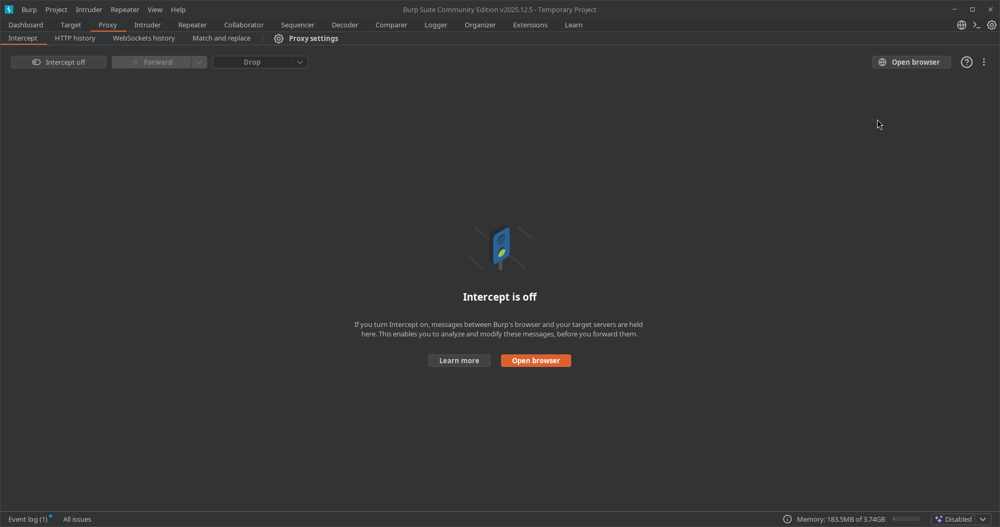
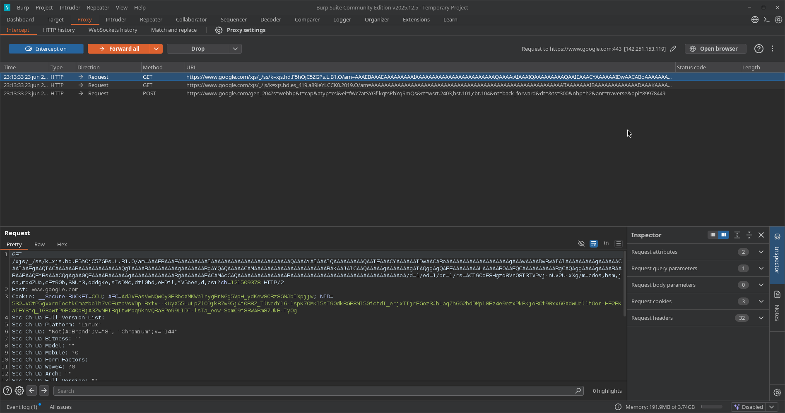
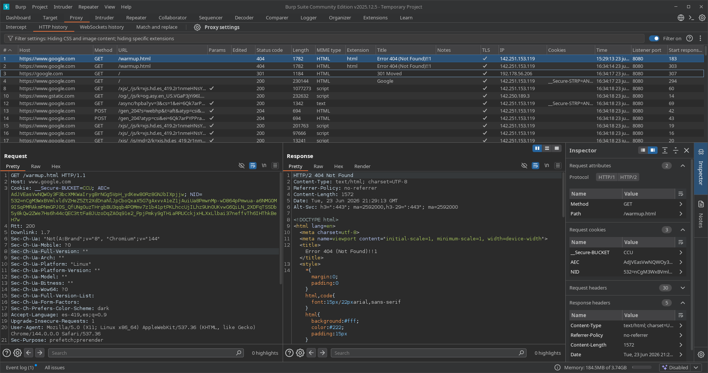
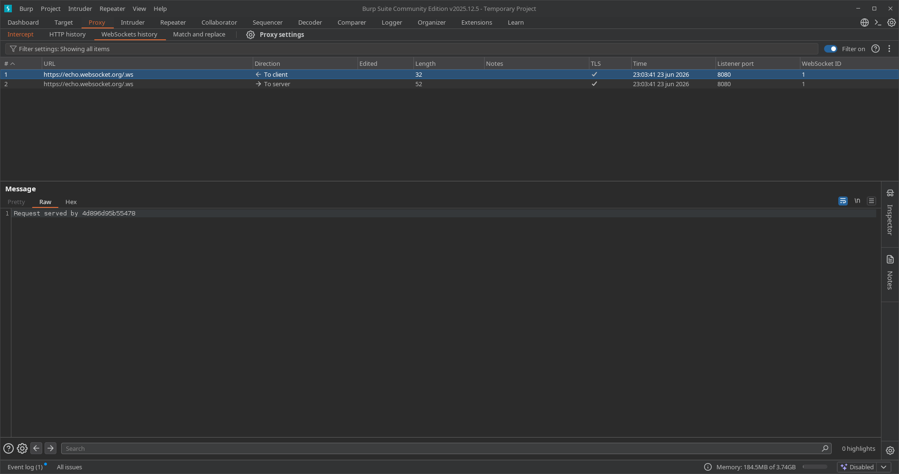
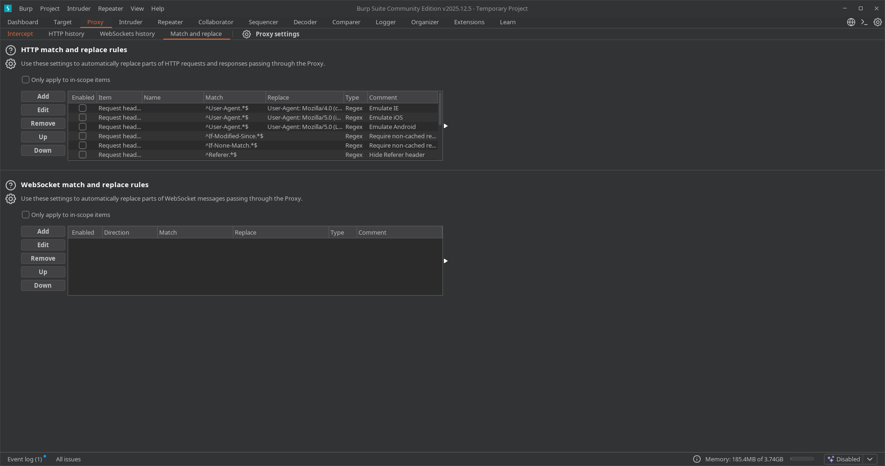
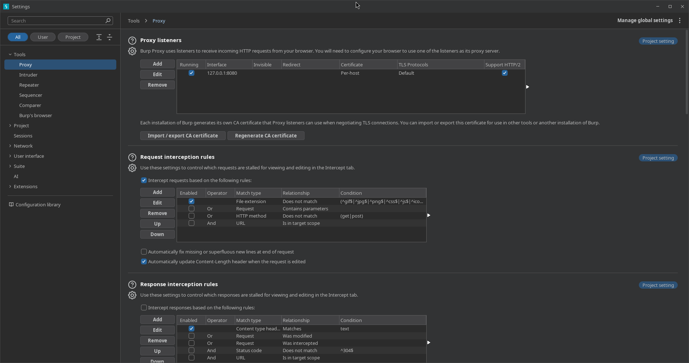
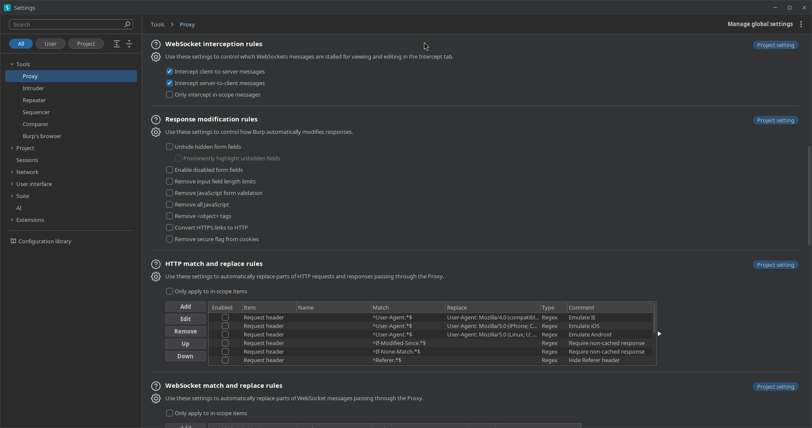
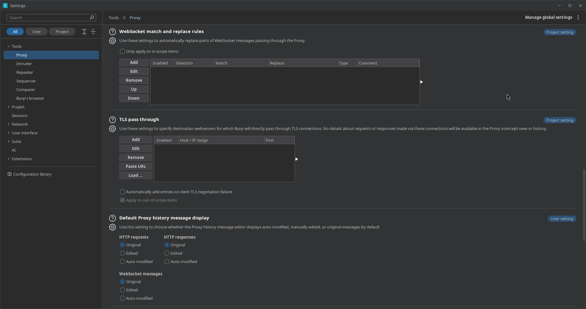
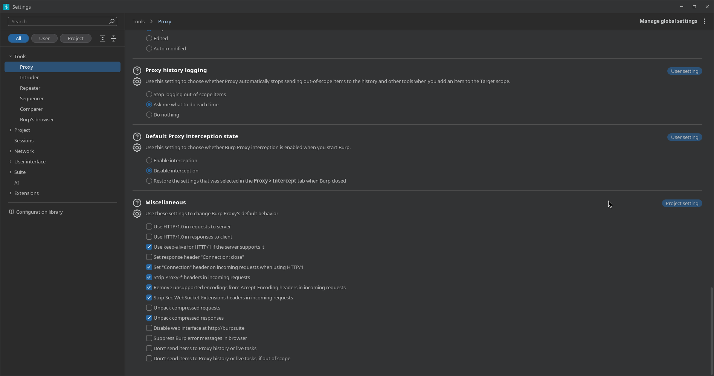
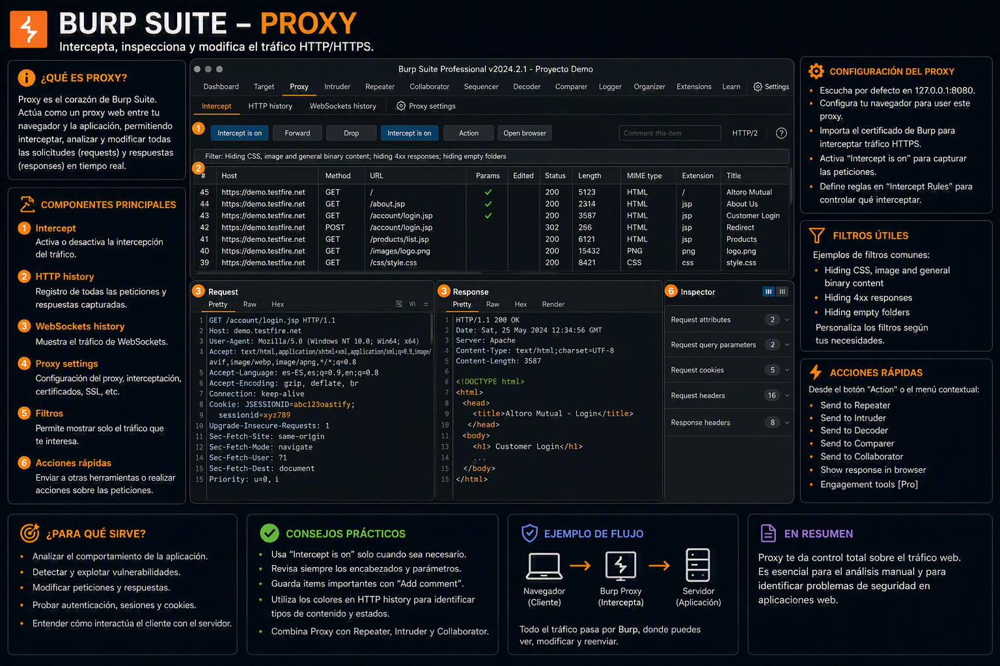

03. Proxy
📌 Propósito Operativo
El Proxy es la herramienta central e icónica de Burp Suite. Actúa como un intermediario (Man-in-the-Middle) situado estratégicamente entre nuestro navegador web (o cliente) y el servidor objetivo. Su función crítica en una auditoría es capturar, inspeccionar y permitir la modificación en tiempo real de todo el tráfico de la capa de aplicación, tanto las peticiones salientes (Requests) como las respuestas entrantes (Responses).

🧩 Análisis Exhaustivo de las Pestañas Principales
La sección de Proxy se segmenta operativamente en cinco sub-pestañas indispensables:
1. 🛑 Intercept (Interceptación en Tiempo Real)

🕹️ Panel de Control Superior (Control de Flujo)
- Botón Intercept (On / Off): Alterna el estado del proxy. Cuando se encuentra en
Intercept on, Burp captura las peticiones y las retiene indefinidamente. Si se desactiva (Intercept off), el tráfico fluye libremente pero se sigue indexando pasivamente en el HTTP History. - Forward: Libera la petición que se muestra actualmente en pantalla (incluyendo cualquier modificación manual realizada en sus cabeceras o cuerpo) permitiéndole continuar su camino hacia el backend del servidor.
- Drop: Destruye el paquete de forma fulminante. El servidor nunca se entera de la existencia de esa petición y el navegador cliente rompe la carga mostrando un error de conexión vacía o cancelada.
- Menú Desplegable Action: Proporciona un menú contextual de escalado operativo rápido. Permite enviar el flujo de datos exacto a otros módulos (
Send to RepeaterconCtrl+R,Send to IntruderconCtrl+I), cambiar el método HTTP (convertir unGETaPOSTautomáticamente) o forzar la interceptación de la respuesta HTTP asociada a esta petición específica medianteIntercept response to this request. - Open Browser: Lanza una instancia integrada de Chromium preconfigurada de forma nativa para enrutar todo su tráfico a través de la interfaz del proxy de Burp, eliminando la necesidad de instalar extensiones de terceros (como FoxyProxy) o alterar los almacenes de certificados del sistema operativo anfitrión.
📊 Fila de Metadatos de la Petición
Situada justo encima del visualizador, muestra la URL base completa del objetivo junto con su dirección IP de resolución y el puerto destino (Ej: Request to https://www.google.com:443 [142.251.155.119]). A su derecha, el icono del lápiz (✏️) permite reescribir manualmente el host de destino sobre la marcha.
📝 Visualizador del Cuerpo del Mensaje (Panel Inferior Izquierdo)
Este subpanel presenta de manera estructurada el contenido en crudo de la petición HTTP interceptada:
* Pestaña Pretty: Aplica un formateo estético automático al código estructurado (JSON, XML, HTML) o payloads kilométricos de parámetros para que la lectura del auditor sea cómoda y rápida.
* Pestaña Raw: Muestra la petición HTTP en su estado más puro y nativo, exponiendo saltos de línea (\r\n), la estructura exacta de la cabecera Host, las directivas de seguridad como Sec-Ch-Ua, los valores de las Cookies de sesión y los tokens de autenticación en texto plano.
* Pestaña Hex: Expone los datos en formato hexadecimal. Es indispensable cuando se auditan subidas de archivos binarios, manipulación de caracteres nulos (%00) o payloads de evasión que requieren la inyección de bytes específicos no imprimibles.
🔍 Panel Lateral Izquierdo: Inspector (Análisis Estructurado)
El Inspector segmenta matemáticamente los componentes de la petición para realizar análisis analíticos rápidos sin necesidad de buscar entre las líneas del código en crudo:
* Request attributes: Muestra información general del protocolo, como el método empleado (GET), la ruta HTTP solicitada (/async/hpba...) y la versión de HTTP (HTTP/1.1).
* Request query parameters: Desglosa de forma automática todos los parámetros adjuntos en la URL (los valores que siguen al símbolo ? separados por &). Permite editar, añadir o borrar variables de forma aislada para buscar inyecciones como SQLi o fallos lógicos.
* Request body parameters: Extrae y lista los parámetros enviados dentro del cuerpo de la petición (típicos en métodos POST con formatos application/x-www-form-urlencoded).
* Request cookies: Mapea de forma individualizada cada una de las cookies enviadas por el navegador (como tokens JWT, variables PHPSESSID o identificadores analíticos), permitiendo alterar valores clave (como cambiar un parámetro de rol de user a admin) sin romper la estructura de la cabecera original.
* Request headers: Almacena de forma ordenada la totalidad de las cabeceras HTTP de la petición (User-Agent, Accept-Language, Authorization, etc.), facilitando la inyección automatizada de cabeceras de suplantación de IP (como X-Forwarded-For).
2. 🪵 HTTP History (Historial de Navegación HTTP/S)
Representa la base de datos cronológica de todo el tráfico que ha cruzado el proxy desde el inicio de la sesión.

🔍 Barra de Filtros Superior
- Filter settings: Situada en la parte alta de la tabla, actúa como el primer escudo contra el ruido visual (Ej:
Filter settings: Hiding CSS and image content; hiding specific extensions). Al hacer clic sobre ella, se despliega el menú de configuración que permite aislar objetivos del Scope, ocultar archivos estáticos redundantes o filtrar por códigos de estado específicos. - Filter on: Un interruptor rápido deslizable (
on/off) situado a la derecha que permite activar o desactivar instantáneamente las reglas de filtrado guardadas sin perder su configuración interna.
📊 Columnas Analíticas de la Tabla de Historial
Cada fila representa una interacción de red indexada de forma consecutiva con las siguientes columnas de metadatos:
* # (ID): El número de índice secuencial e incremental que Burp asigna a cada petición capturada.
* Host: El dominio o dirección IP del servidor destino (Ej: https://www.google.com).
* Method: El verbo o método HTTP empleado en la acción (GET, POST, etc.).
* URL: La ruta o endpoint específico consultado dentro del servidor (Ej: /warmup.html).
* Params: Indica con una marca de verificación (✓) si la petición transporta parámetros en la URL (Query), en el cuerpo (Body) o en formularios multipartes, facilitando la detección rápida de puntos de inyección potenciales.
* Edited: Muestra si el paquete fue alterado manualmente en la pestaña Intercept antes de ser enviado al servidor.
* Status code: El código de respuesta HTTP devuelto por el backend. Es crucial para el mapeo rápido (Ej: 200 OK para éxito, 301/302 para redirecciones, 404 Not Found para recursos inexistentes).
* Length: El tamaño en bytes del cuerpo del mensaje de respuesta.
* MIME type / Extension: Identifica el tipo de contenido del recurso (HTML, script, text) junto con su extensión (html, js), ayudando a filtrar rápidamente scripts vulnerables o subidas de archivos.
* Title: Extrae automáticamente la etiqueta HTML <title> de la respuesta, permitiendo al auditor deducir el propósito de la página sin abrirla (Ej: Error 404 (Not Found)!!!).
* TLS: Una marca de verificación (✓) que certifica si la sesión de red viaja cifrada mediante TLS/SSL.
* IP: La dirección IP pública o interna del servidor remoto con el que se estableció la comunicación.
* Cookies: Muestra fragmentos de las cookies enviadas (Ej: __Secure-STRIP=...), útiles para identificar la persistencia de sesiones de usuario.
* Time: La marca de tiempo exacta de la ejecución de la petición.
* Listener port: El puerto local de Burp Suite por donde entró el tráfico (habitualmente 8080).
📐 Interfaz Tripartita de Inspección (Panel Inferior)
Al seleccionar cualquier petición del historial, la interfaz de Burp se divide en tres potentes paneles paralelos para una auditoría exhaustiva en pantalla dividida:
📥 A. Panel de Petición (Request)
Situado abajo a la izquierda, despliega lo que el cliente envió al servidor.
* Cuenta con las sub-pestañas Pretty, Raw y Hex para desglosar de forma integral el método, el host, las cookies de sesión (como __Secure-BUCKET, AEC, NID) y la cadena del User-Agent empleada por el navegador web.
📤 B. Panel de Respuesta (Response)
Situado en el centro inferior, muestra de manera sincronizada la contestación exacta entregada por el servidor.
* Incluye una sub-pestaña adicional llamada Render, que emula de forma estática la visualización visual que vería el usuario final en su navegador (muy útil para confirmar de un vistazo páginas de error 404 o paneles administrativos bloqueados).
* Permite auditar en crudo las cabeceras de seguridad que envía el backend (Content-Type, Referrer-Policy, Content-Length) y el código fuente estructurado que retorna.
🔍 C. Panel Lateral Derecho: Inspector Sincronizado
El Inspector actúa aquí como un desglosador analítico automatizado que extrae los datos de la fila seleccionada y los organiza en menús desplegables inteligentes:
* Request attributes: Muestra de forma aislada el protocolo utilizado (HTTP/1 o HTTP/2), el método (GET) y la ruta limpia analizada (/warmup.html).
* Request cookies: Extrae de manera individualizada el nombre y valor de cada cookie presente en la petición (__Secure-BUCKET, AEC, NID) para su estudio criptográfico o de sesión.
* Request headers: Agrupa numéricamente el total de cabeceras de la petición cliente (Ej: 30 cabeceras detectadas).
* Response headers: Desglosa de forma quirúrgica las cabeceras emitidas por el servidor web, facilitando la revisión rápida del tamaño exacto del cuerpo (Content-Length: 1572) y la fecha/hora exacta del backend.
3. 🔌 WebSocket History (Tráfico Bidireccional Asíncrono)
Sección especializada para el análisis de comunicaciones basadas en el protocolo WebSocket (ws:// o wss://).

🔍 Barra de Filtros e Historial Superior
- Filter settings (Barra superior): Permite aislar los canales de sockets por palabras clave o limitar la vista exclusivamente a hosts dentro del Scope global (Ej:
Filter settings: Showing all items). - Filter on: Interruptor deslizable para activar o mitigar los filtros de visualización sin alterar los parámetros de búsqueda interna de la sesión.
📊 Columnas Técnicas del Historial de Sockets
A diferencia de la tabla HTTP convencional, las interacciones asíncronas se indexan mediante metadatos específicos del flujo continuo:
* # (ID secuencial): Identificador numérico e incremental de cada mensaje individual transmitido por el túnel.
* URL: La dirección del endpoint o pasarela de sockets encargada de la persistencia de datos (Ej: https://echo.websocket.org/.ws).
* Direction (Dirección del Tráfico): Campo crítico que clasifica el origen y destino del paquete:
* ⬅️ To client: Mensaje asíncrono empujado por el backend del servidor hacia el frontend del navegador.
* ➡️ To server: Payload o parámetro inyectado desde el cliente web hacia los procesos internos del servidor.
* Edited: Muestra si el mensaje sufrió alguna modificación manual previa.
* Length: El tamaño en bytes del payload o mensaje transmitido (Ej: mensajes de 32 y 52 bytes respectivamente en la captura).
* Notes: Comentarios u observaciones automáticas del sistema o de extensiones.
* TLS: Una marca de verificación (✓) que valida si el túnel del socket está operando bajo cifrado TLS de capa de transporte seguro (wss).
* Time: Registro cronológico de milisegundos indicando el instante preciso del envío o la recepción.
* Listener port: El puerto local por el que Burp intercepta y canaliza la sesión de red (comúnmente 8080).
* WebSocket ID: El identificador único asignado al canal o túnel persistente. Si abres varias pestañas de chat o conexiones independientes, esta columna te ayuda a distinguir qué mensaje pertenece a qué sesión activa (Ej: ambos pertenecen a la sesión 1).
📐 Visualizador de Cargas Útiles (Panel de Mensaje Inferior)
Al seleccionar cualquiera de los ítems de la tabla superior, se expone el cuerpo neto del mensaje en el bloque inferior:
* Pestaña Message: Muestra de manera aislada el contenido limpio del paquete. Cuenta con sub-vistas tradicionales (Pretty, Raw, Hex) para analizar cadenas de caracteres inyectadas (como el texto plano en crudo retornando un identificador de servidor: Request served by 4d896d95b55478).
* Inspector Lateral Derecho: Al igual que en el tráfico tradicional, desglosa propiedades atómicas de la comunicación para optimizar los procesos de recolección de información.
4. 🔀 Match and Replace (Reglas de Reemplazo Automático)
Herramienta de automatización y manipulación de cadenas de texto basada en expresiones regulares (Regex).

⚙️ Controles de Gestión de Reglas (Panel Izquierdo)
A la izquierda de cada bloque de reglas se sitúa una botonera vertical que gobierna el comportamiento de la base de datos de modificaciones: * Add: Despliega una ventana emergente para parametrizar una nueva regla personalizada (tipo de datos, string de coincidencia, reemplazo y comentarios). * Edit: Abre el constructor de la regla seleccionada para alterar sus expresiones regulares o cadenas de texto. * Remove: Elimina de forma permanente la regla del listado. * Up / Down: Modifica la jerarquía y el orden de ejecución de las reglas. Burp procesa la lista de arriba hacia abajo; la prioridad es vital cuando una regla depende de la modificación previa de otra cabecera.
🌐 HTTP Match and Replace Rules (Bloque Superior)
Aplica modificaciones automatizadas sobre paquetes que transitan mediante HTTP o HTTPS tradicionales.
* Casilla Only apply to in-scope items: Filtro crítico. Al marcarse, restringe las sustituciones automáticas únicamente a los dominios declarados en el Scope global, evitando modificar accidentalmente peticiones de fondo del sistema operativo o de webs ajenas al objetivo.
* Estructura de la Tabla de Reglas:
* Enabled: Casilla de verificación rápida para activar o pausar la regla individual sin necesidad de borrarla.
* Item: Define la sección exacta del paquete donde buscar (Ej: Request header para cabeceras de petición, Response body para el cuerpo que viene del servidor, etc.).
* Match: La expresión regular o literal buscada (Ej: ^User-Agent.*$ o ^Referer.*$).
* Replace: El valor arbitrario o modificado que suplantará a la cadena original (Ej: payloads para emular navegadores móviles o IE).
* Type: El motor de procesamiento usado (típicamente Regex).
* Comment: Nota descriptiva de su propósito operativo.
📋 Reglas por Defecto Incluidas (Casos de Uso del Sistema):
- Emulación de Dispositivos / User-Agent Bypass: Incluye reglas (desactivadas por defecto) para suplantar la identidad del navegador simulando entornos como Internet Explorer (IE), iOS (iPhone) o Android. Útil para forzar al servidor a entregar layouts móviles o lógicas simplificadas propensas a fallos.
- Forzar Carga Limpia (
Require non-cached response): Reglas dirigidas a buscar las cabecerasIf-Modified-SinceeIf-None-Matchpara eliminarlas de la petición saliente (Replaceen blanco). Esto obliga al servidor web a responder siempre con el recurso completo actualizado (200 OK) en lugar de una respuesta de caché (304 Not Modified), garantizando que Burp analice código fresco. - Privacidad y Evasión (
Hide Referer header): Busca la cabecera^Referer.*$y la remueve para evitar que el servidor destino rastree el origen de la navegación del auditor.
🔌 WebSocket Match and Replace Rules (Bloque Inferior)
Sección homóloga diseñada específicamente para interceptar y alterar los mensajes que viajan a través de canales de comunicación persistentes y bidireccionales (ws:// y wss://).
* Cuenta con su propio control de exclusión para aplicar sustituciones únicamente a elementos en Scope (Only apply to in-scope items).
* Columna Direction: Campo exclusivo en esta tabla que condiciona la regla según la dirección del flujo del socket, permitiendo aplicar el reemplazo automatizado únicamente cuando el mensaje va hacia el servidor (To server) o cuando viaja hacia el navegador del cliente (To client).
🚀 Vectores Tácticos y Casos de Uso Comunes en Red Team:
- Suplantación de Roles / Escalada de Privilegios: Crear una regla que busque de forma masiva en las cabeceras de petición (
Request header) la cadenaCookie: role=usery la sustituya automáticamente porCookie: role=admin, forzando accesos sin necesidad de modificar cada paquete en el Intercept. - Bypass de Validaciones en el Cliente (Client-Side Validation Bypass): Configurar una regla orientada al cuerpo de la respuesta (
Response body) que lofalice funciones restrictivas de JavaScript (Ej: cambiarvalidateInput(){return true}en lugar de la lógica compleja) eliminando trabas de formularios antes de que impacten en el navegador. - Inyección de Cabeceras de Suplantación de IP (WAF / Network Bypass): Añadir una regla que inyecte de manera sistemática en cada petición saliente cabeceras críticas como
X-Forwarded-For: 127.0.0.1oX-Client-IP: 127.0.0.1para confundir proxies inversos, evadir geobloqueos o simular que las peticiones se originan desde la red interna del propio servidor.
5. ⚙️ Proxy Settings (Configuración del Entorno de Red)
Permite definir la escucha de interfaces, automatizar la alteración de flujos criptográficos TLS y parametrizar las reglas lógicas que deciden qué paquetes congelar.




🌐 1. Gestión de Interfaces y Tráfico Inicial
A. Proxy listeners (Oyentes del Proxy)
- Tabla de Interfaces: Muestra los sockets activos donde Burp Suite escucha el tráfico. Por defecto se establece en
127.0.0.1:8080(bucle de retorno local).Running: Casilla de verificación que indica si el puerto está abierto con éxito. Si otra aplicación del sistema ya usa el puerto 8080, se desmarcará automáticamente.Invisible: Modo especial para interceptar aplicaciones cliente que no admiten proxies de manera nativa (fuerza la redirección a nivel de red).Certificate: Define la política de generación de certificados TLS (por defectoPer-host).Support HTTP/2: Habilita la negociación y soporte para peticiones bajo la infraestructura del protocolo HTTP/2.
- Import / export CA certificate: Botón crucial para extraer la llave pública del certificado raíz
PortSwigger CA. Al instalarlo en el almacén del sistema o del navegador, se rompe el cifrado HTTPS de forma controlada sin alertas de seguridad. - Regenerate CA certificate: Genera un certificado raíz completamente nuevo. Es la solución recomendada cuando el certificado previo expira o genera conflictos de confianza.
B. Request interception rules (Reglas de Interceptación de Peticiones)
Gobierna qué peticiones se detendrán en la pestaña Intercept.
* Regla por defecto (File extension): Viene activa una regla tipo Regex que descarta (Does not match) extensiones comunes de archivos estáticos: (^gif$|^jpg$|^png$|^css$|^js$|...). Esto evita que la interfaz se congele de forma molesta con imágenes u hojas de estilo.
* Casillas de control inferiores:
* Automatically fix missing or superfluous new lines at end of request: Corrige automáticamente la sintaxis HTTP al final de los paquetes agregando los saltos de línea reglamentarios (\r\n).
* Automatically update Content-Length header when the request is edited: (Activa por defecto) Si modificas manualmente el tamaño de un payload dentro de Intercept, Burp recalcula y actualiza la cabecera Content-Length para que el servidor no descarte la petición por corrupción de tamaño.
C. Response interception rules (Reglas de Interceptación de Respuestas)
- Condiciona la detención de paquetes que viajan de regreso desde el servidor hacia el cliente. Por defecto, incluye reglas lógicas para interceptar únicamente respuestas cuyo tipo de contenido (
Content type header) coincida con el formatotext(HTML, scripts, etc.), ignorando binarios o descargas pesadas.
🎛️ 2. Automatización del Cliente y Reglas de Coincidencia
A. WebSocket interception rules
- Controla el comportamiento de congelación en canales de comunicación persistentes. Cuenta con dos casillas independientes para interceptar de forma aislada los mensajes del cliente al servidor (
Intercept client-to-server messages) o del servidor al cliente (Intercept server-to-client messages).
B. Response modification rules (Reglas de Modificación de Respuestas)
Automatizaciones brutas de seguridad defensiva aplicadas sobre las respuestas del servidor antes de que impacten al navegador:
* Unhide hidden form fields: Fuerza a que todos los campos ocultos de los formularios (type="hidden") se rendericen visibles. Excelente vector para identificar parámetros de control de precios o roles que los desarrolladores ocultan al usuario común.
* Enable disabled form fields: Elimina el atributo disabled de los elementos de formularios, permitiendo interactuar con botones o campos restringidos desde la interfaz visual.
* Remove input field length limits: Borra las restricciones de longitud máxima (maxlength) en los campos de entrada de texto, facilitando la inserción de payloads kilométricos de XSS o SQLi directamente desde la web.
* Remove JavaScript form validation: Deshabilita los scripts de validación del lado del cliente.
* Remove all JavaScript: Remueve por completo las etiquetas <script> de los sitios web consultados.
* Remove <object> tags / Convert HTTPS links to HTTP: Opciones heredadas para auditorías de compatibilidad y rebaja de cifrado (SSL Striping).
* Remove secure flag from cookies: Remueve la bandera Secure de las cookies transmitidas, lo que permite su viaje a través de canales HTTP no cifrados para vectorizar secuestros de sesión.
C. HTTP / WebSocket match and replace rules
- Espejo de configuración global para añadir o editar las reglas de expresiones regulares (
Regex) automatizadas descritas en el bloque principal del módulo.
🔒 3. Túneles y Modos de Visualización
A. TLS pass through (Pasar a través de TLS)
- Permite definir una lista de dominios o rangos IP específicos hacia los cuales Burp Suite transmitirá las conexiones TLS/SSL de forma directa, sin descifrar el tráfico.
- Propósito táctico: Si una aplicación implementa esquemas estrictos de SSL Pinning que bloquean el funcionamiento del proxy, o si deseas omitir el tráfico masivo hacia plataformas de actualización del sistema operativo (como servidores de Windows Update), añades el host a esta tabla para aliviar el procesamiento de la CPU.
B. Default Proxy history message display
Establece qué versión del paquete se renderizará de forma predeterminada al consultar el HTTP History o el WebSocket History:
* Original: Muestra el paquete tal y como fue concebido en primera instancia.
* Edited: Muestra las modificaciones manuales inyectadas durante la interceptación.
* Auto-modified: Muestra el estado final del paquete tras haber sido procesado por las reglas automáticas de Match and Replace.
🪵 4. Comportamiento del Sistema y Miscelánea
A. Proxy history logging
- Define las directivas de almacenamiento cuando se trabaja con el Scope del proyecto. Cuenta con la opción interactiva
Ask me what to do each time(Preguntarme qué hacer cada vez), la cual despliega una alerta al auditor si detecta que se están indexando URLs que quedan fuera de los límites autorizados de la auditoría.
B. Default Proxy interception state
- Dictamina si Burp Suite debe iniciar con la pestaña Intercept encendida o apagada cada vez que abras el software. La buena práctica dicta dejarlo configurado en
Disable interceptionpara evitar bloqueos indeseados de red en el arranque.
C. Miscellaneous (Miscelánea y Ajustes del Protocolo)
Colección de selectores avanzados de ingeniería de bajo nivel sobre las conexiones HTTP/1:
* Use HTTP/1.0 in requests to server / responses to client: Degradan la versión del protocolo a HTTP/1.0 para entornos antiguos.
* Use keep-alive for HTTP/1 if the server supports it: (Activa por defecto) Mantiene abiertos los canales de red TCP para agilizar la transmisión y ahorrar recursos del sistema operativo.
* Strip Proxy-* headers in incoming requests: (Activa por defecto) Remueve cabeceras de proxy intermedias para limpiar las peticiones salientes hacia el objetivo.
* Remove unsupported encodings from Accept-Encoding headers: Modifica la cabecera cliente para indicarle al servidor que no envíe formatos de compresión extraños que Burp no pueda decompressar en las pestañas Pretty o Raw.
* Unpack compressed responses: (Activa por defecto) Descomprime automáticamente payloads en formatos GZIP/Deflate para que el código fuente de las respuestas siempre aparezca visible en texto claro.
* Don't send items to Proxy history or live tasks, if out of scope: Restringe de forma drástica el uso de memoria RAM evitando procesar o guardar datos de cualquier host que no esté explícitamente añadido al Scope operativo.
🛠️ Buenas Prácticas del Auditor en el módulo Proxy
- Mantener Apagado el Intercept por Defecto: Para evitar cuellos de botella e interrupciones molestas durante la exploración inicial, navega con la pestaña Intercept en OFF. Deja que todo se registre fluidamente en el HTTP History y, posteriormente, envía las peticiones específicas de tu interés hacia el Repeater para su explotación controlada.
- Uso Riguroso del Scope: El HTTP History puede llenarse rápidamente con cientos de peticiones a servicios en segundo plano de tu sistema operativo (telemetría de navegadores, actualizaciones de sistema). Aplica el filtro
Show only in-scope itemsde inmediato para centrar tu atención exclusivamente en los activos autorizados de la auditoría.
